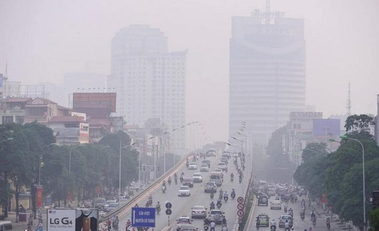

Trước khi tìm hiểu về thực trạng ô nhiễm không khí chúng ta cần phải hiểu ô nhiễm không khí là gì? Ô nhiễm không khí là hiện tượng thay đổi các thành phần trong không khí, xuất hiện các hạt, các khí lạ có mùi gây hại. Khi không khí bị nhiễm bẩn sẽ gây rất nhiều tác hại đến sức khỏe con người và các sinh vật khác, gây biến đổi khí hậu, ảnh hưởng xấu đến môi trường sống trên trái đất.

Những nội dung chính cần tìm hiểu:
Để có thể hiểu hơn về vấn đề ô nhiểm này, Bây giờ chúng ta cùng tìm hiểu các nội dung trên nhé:
1. Lý do chọn đề tài
2. Thực trạng ô nhiễm không khí hiện nay
3. Nguyên nhân gây ô nhiễm không khí
Nguyên nhân tự nhiên:
Ô nhiễm từ bụi, gió
Núi lửa phun trào
Bão, lốc xoáy
Thời điểm giao mùa
Cháy rừng
Nguyên nhân do con người:
Chúng ta là nạn nhân của việc ô nhiễm môi trường, tuy nhiên chúng ta cũng chính là những nguyên nhân chính gây ô nhiễm.
Hoạt động sản xuất công, nông nghiệp.
Giao thông vận tải.
Hoạt động quốc phòng, quân sự.
Hoạt động xây dựng cơ sở hạ tầng.
Thu gom xử lý rác thải.
Hoạt động sinh hoạt.
4. Hậu quả
5. Hướng giải quyết
*Để khắc phục ô nhiễm môi trường không khí chúng ta cần:
Tiếp tục hoàn thiện hệ thống pháp luật về bảo vệ môi trường.
Không vứt rác bừa bãi.
Xử lý khí thải trước khi xả ra môi trường.
Ứng dụng công nghệ xanh vào việc xây dựng, trồng trọt, chăn nuôi.
Hạn chế sử dụng các hóa chất trong nông, lâm nghiệp.
Cấm các loại xe đã hết hạn, không đảm bảo tiêu chuẩn khí thải lưu thông.
Tuyên truyền, vận động người dân để mọi người hiểu thêm về tác hại của ô nhiễm môi trường không khí.
Xử lý rác thải đúng cách.
Và nếu mọi người muốn tìm hiểu về tác giả của Website có thể bấm vào link sau: